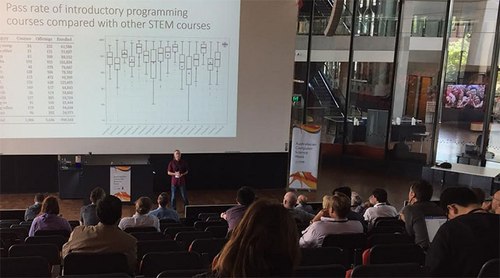

ACE 2023
Australasian Computing Education Conference

Paper submissions
Papers are to be submitted via EasyChair , and will be reviewed by a minimum of three members of the Program Committee.
First, create your own account on EasyChair then login and follow the prompts to submit your paper which must be fully anonymised for double blind reviewing. If there are any issues with submission, please email the ACE chairs: ace22@easychair.org
Papers must be in English and must be original contributions that have not been published previously, nor submitted to other conferences or journals in parallel with this conference.
Papers must be between 5 and 10 pages long (inclusive of any references). Papers are required to conform to the formatting guidelines of the ACM Conference paper guides. Authors should use the Association for Computing Machinery (ACM) – SIG Proceedings Template:
- LaTeX template
- MS Word template
If you are using Latex, use the “sigconf” style in documentclass (which is the default if you create a project using the LaTeX link above). Page length includes references. The accepted format for submissions is Portable Document Format (PDF). Microsoft Word and LaTeX template files are available at the website link above. We recommend using the LaTeX template where possible, but if you choose to use MS Word, then please use the Interim Template listed on the ACM conference proceedings page listed above.
By submitting to the conference, authors accept that they are aware of the Guidelines on Research Practice in Computer Science by the Computer Research and Education Association (CORE). In particular, authors are encouraged to review the points on authorship.
Please review the Guidelines for authors on this site, before submitting.
Practitioner submissions
Papers are to be submitted via EasyChair, and will be reviewed by a minimum of three members of the program committee. For details of the submission process, refer to the instructions for Research Paper submissions.
Practitioner submissions provide the opportunity for teachers to demonstrate new educational tools, and to share interesting teaching resources, assignments, and techniques that may be of broad interest to the community. We encourage the submission of papers that present interesting ways to teach challenging concepts, engaging activities that promote student learning, and compelling assignments.
Practitioner papers that are accepted and presented will appear in the ACE proceedings.
Student authors
Student authors may be eligible for a CORE Student Research award.
To qualify as a student paper:
- the major contribution must be made by a student author, who must be listed as first author; and
- at the time of submission, the authors must indicate that their paper is to be classified as a student paper, and provide a letter of confirmation from the student’s supervisor or Head of Department by email to the conference chairs (ace22@easychair.org).
Guidelines for authors
Double-blind reviewing requirements: It is standard practice that identities of reviewers are not made known to authors. The double-blind review process extends this principle so that reviewers do not know the identity of authors. This process requires authors to refrain from identifying themselves in their own paper. Below are some guidelines for anonymising your paper.
- If you are using the ACM template correctly, you can tell it to create an anonymous version of the pdf; this will take care of explicit mentions of the author names.
- If you are not yet using the template (you should be!), in place of the usual author and address details, put “Author details suppressed” or something equivalent. Where there are more than three authors contributing to a paper, limit the number of author spaces to three in the anonymised version.
- Refrain from references to your university or campus by name. If you feel that a description of your university is in some way salient to the paper, use generalities. For example, use "our University" instead of "Maintown University of Technology".
- Avoid expressions like “In earlier work we …” followed by a citation of a paper authored by yourself.
- If you have an acknowledgements section, omit it for the blind submission.
- Do not link to webpages in your anonymised paper.
- Once you have a pdf copy of your paper, see how well it is blinded. Some PDF creation software includes document properties such as the author name or institution. Some operating systems will show such document properties when the cursor hovers over the file name. Be especially careful to disguise or remove these properties.
In general, apply good judgement when preparing your submission, to maintain the integrity of the double-blind process. Submissions that allow the author to be identified may be returned to you for editing at short notice, or may be rejected outright.
Registration for ACSW: At least one author of an accepted paper must register to attend ACSW. When submitting a paper, you will be asked to nominate who will be attending ACE and presenting the paper if it is accepted. Papers not presented at ACE will be withdrawn from the proceedings. Please see the ACSW site for registration.